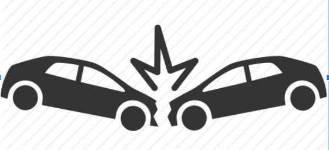

Business Problem
The goal of this project is to minimize the injuries and deaths occurring due to vehicle collisions in
New York City. The business problem here is to reduce the injuries and deaths due to vehicle collisions.
We reduce this business problem into data mining problem by hypothesizing that the population of an area
has a major say in determining the said injuries and deaths. We measure the impact population has on
vehicle related deaths and injuries and extract a predictive value out of it.
Applications/business uses.
Gives the city information on key areas/times collisions occur so they can implement more cameras or traffic enforcement in these areas that are more accident prone. If accidents occur at night for example in a specific area add more street lights there. Speeding : construct more stop signs or deploy speed traps where needed


Our data could also be use to determines how much insurance companies should expect to charge for individuals on their premiums depending on various factors such as their vehicle type and what areas they will often drive in.
Linear Regression Model.
We are using linear regression for year 2017 to predict 2018 and and making sure that our calculation is correct. After that we are going to use the same formula to predict 2019.
1. Run linear regression to see which variables has the most impact on collision.
2. Determine highly-influence factors from the variables that caused the collision.
3. Use other year historical data as training data to run cross validation to test our model
Dependent Variables
Out of all the fields, zip code is chosen as the population density of the zip codes are hypothesized to have the most predictive value. However, Population is not field in our database. So, we use another database that equates zip codes with their population. For this, we use Demographic Statistics by Zip Code database found in NYC Open Data website.
The target Variable is combination of
[NUMBER OF PERSONS INJURED]
[NUMBER OF PERSONS KILLED]
 >
>
Modelling
The form of data mining used is supervised data mining. Our target field is labelled, and we know exactly
what outcome we are trying to achieve. We use population of an area to predict the number of
collision-related injuries and deaths in that area. Hence, we are utilizing predictive modelling.
In the project, we use linear regression model for predictive modelling. For this, we use a sum of the number of injuries and the number of deaths by zip codes as the dependent variable (y), and we use population of the zip codes as the independent variable (x).
In the project, we use linear regression model for predictive modelling. For this, we use a sum of the number of injuries and the number of deaths by zip codes as the dependent variable (y), and we use population of the zip codes as the independent variable (x).
PASSENGER VEHICLE, TIME, DATE, Holiday/not holiday, Driver Inattention/Distraction
First we need to find the entropy/information gain of each attribute
(DONE)TOTAL(our target variable) parent
(Done) WHO - PASSENGER VEHICLE, SPORT UTILITY / STATION WAGON, Other
we need to get one side that is passenger and the other side is not passenger
(Done)WHAT - (TIME)
4 am to 4 pm
4pm to 4 am
WHEN - (DATE) Holiday/not holiday(need to extract and filter data) (yes or no)
(Done) WHY - Driver Inattention/Distraction(need to extract and filter data) (yes or no)
WHERE
No injury 86981/107248 = 0.81102677905
Injury 20267/107248 = 0.18897322094
(parent) Total injured:
-((86981/107248)*log2(86981/107248)+(20267/107248)*log2(20267/107248)) = 0.6993
Morning total= 59689
Unharm = 49327/59689
Harm = 10362/59689
-((49327/59689)*log2(49327/59689)+(10362/59689)*log2(10362/59689))=0.6658737744598082
Evening total = 47559
Unharm = 37654/47559
Harm = 9905/47559
-((37654/47559)*log2(37654/47559)+(9905/47559)*log2(9905/47559))=0.7381582939631328
INFORMATION GAIN (TIME)
0.6993 - ((59689/107248)*0.6658737744598082 + (47559/107248)*0.7381582939631328)
=0.0013717400201017783
Holiday/Not Holiday
Holiday = 4282/107248
Unharm = 3445/4282
Harm = 837/4282
-((3445/4282)*log2(3445/4282)+(837/4282)*log2(837/4282))=0.7127738
Not Holiday = 102966/107248
Unharm = 83536/102966
Harm = 19430/102966
-((83536/102966)*log2(83536/102966)+(837/428219430/102966)*log2(837/4755919430/102966))=0.24476671
INFORMATION GAIN (Holiday/Not Holiday)
0.6993 - ((282/107248)*0.7127738 + (102966/107248)*0.24476671) = 0.4624317015379308
passenger vehicle & Non-passenger vehicle
passenger vehicle = 54405
non passenger vehicle = 52843
p(passenger vehicle) = 54405/107248=>0.507282
p(non passenger vehicle) = 52843/107248=>0.492717
p(passenger vehicle type did accident) =10183/ 54405 => 0.187170
p(passenger vehicle type did not accident)= 44222/54405 => 0.812829
p(NON passenger vehicle type did accident) = 10084/52843 =>0.190829
p(NON passenger vehicle type did not accident)= 42759/52843=>0.809171
entropy(passenger vehicle)=-[(10183/ 54405)(log(10183/ 54405))+(44222/54405)(log(44222/54405))]
=>-[( 0.187170)(-2.417579)+(0.812829)(-0.298976)]=>-[-0.452498-0.243016]=>0.695514
entropy(non passenger vehicle)=-[(10084/52843)(log(10084/52843))+(42759/52843)(log(42759/52843))]
=>-[(0.190829)(-2.389647)+(0.809171)(-0.305483)]=>-[-0.456014-0.247188]=>0.703202
information Gain(passenger vehicle type and non passenger vehicle type)= 0.6993-[(0.507282)(0.695514)+(0.492717)(0.703202)]
=>0.6993-[0.352821+ 0.346480]=>0.6993-0.699301=>0
passenger vehicle / STATION WAGON / other Vehicle Type
Passage Vehicle total = 54405
Unharm = 10183 / 54405
Harm = 44222 / 54405
Entropy: -((10183/54405)*log2(10183/54405)+(44222/54405)*log2(44222/54405))
=0.6955142656715457
SPORT UTILITY / STATION WAGON total = 37738
Unharm = 30944 / 32632
Harm = 6794 / 32632
Entropy: -((30944/32632)*log2(30944/32632)+(6794/32632)*log2(6794/32632))
= 0.5440203900702861
Other Vehicle type = 15105
Unharm = 11815/ 15105
Harm = 3290 / 15105
Entropy: -((11815/15105)*log2(11815/15105)+(3290/15105)*log2(3290/15105))
= 0.7561459696091096
INFORMATION GAIN
0.6993-((54405/107248)*0.6955142656715457+(37738/107248)*0.5440203900702861+(15105/107248)*0.7561459696091096)
=0.0485533196397275366
Driver Inattention and distribution / other contributing factor
Driver Inattention/Distraction total = 32632
Unharm = 26432 / 32632
Harm = 6200 / 32632
Entropy: -((26432/32632)*log2(26432/32632)+(6200/32632)*log2(6200/32632))
= 0.7014663313377333
Other contributing factor = 74616
Unharm = 60549/ 74616
Harm = 14067 / 74616
Entropy: -((60549/74616)*log2(60549/74616)+(14067/74616)*log2(14067/74616))
= 0.6983761814407795
INFORMATION GAIN
0.6993-((32632/107248)*0.7014663313377333+(74616/107248)*0.6983761814407795)
=-0.0000164112952979656
Total holiday = 4282
Holiday time -> 4pm to 4 am
= 1966/4282
Entropy: 0.7578200750938036
Holiday time -> 4am to 4 pm
= 2316/4282
Entropy : 0.6706551868879933
Ig of holiday = 0.7127738
0.7127738 - ((1966/4282)*0.7578200750938036+(2316/4282)*0.6706551868879933)
0.7127738 - (0.347938+0.362736)=> 0.7127738 - 0.710674=>0.002099
Holiday ON Driver Inattention/other contributing factor
Holiday = 4282
Driver Inattention_OR_Distraction on Holiday = 1296
p(Driver Inattention_OR_Distraction on Holiday / Holiday) = 1296/4282 => 0.302662
harmed_On Driver Inattention/Distraction = 242
unharmed_On Driver Inattention/Distraction = 1054
p((harmed_On Driver Inattention/Distraction)/(Driver Inattention_OR_Distraction on Holiday))=242/1296
p((harmed_On Driver Inattention/Distraction)/(Driver Inattention_OR_Distraction on Holiday))=1054/1296
other/Distraction on Holiday = 2986
p((other/Distraction on Holiday) / Holiday)=2986/4282 =>0.697338
harmed_On Driver Other contributing factor = 595
unharmed_On Driver other contributing factor =2391
p(harmed_On Driver Other contributing factor/(other/Distraction on Holiday)) = 595/2986 => 0.199263
p(unharmed_On Driver other contributing factor/(other/Distraction on Holiday)) = 2391/2986=> 0.800737
Entropy(Driver Inattention/Distraction on Holiday)= -[(p(242/1296))(log(242/1296)) + (p(1054/1296))(log(1054/1296))]
=>-[(0.186728)(-2.420989)+(0.813272)(-0.298192)] =>-[-0.452066 - 0.242511]
=>0.694577
Entropy(other/Distraction on Holiday)=-[(0.199263)(log(0.199263))+(0.800737)(log(0.800737))]
=>-[(0.199263)(-2.327254)+(0.800737)(-0.320599)]=> -[-0.463736 -0.256715]=>0.720451
IG(Driver Inattention/other contributing factor ON Holiday)=0.7127738 - [(0.302662)(0.694577) + (0.697338)(0.720451) ]
=> 0.7127738 - [(0.210222)+ (0.502397)] =>0.7127738 - [0.712619]=> 0.000155.
From holiday to vehicle type
Station dragon total=1535
unharm=298
harm=1237